Creative
Studio
EPO 50 Years
Two concrete film ideas for EPO in Motion: The Relay and The Rehearsal.
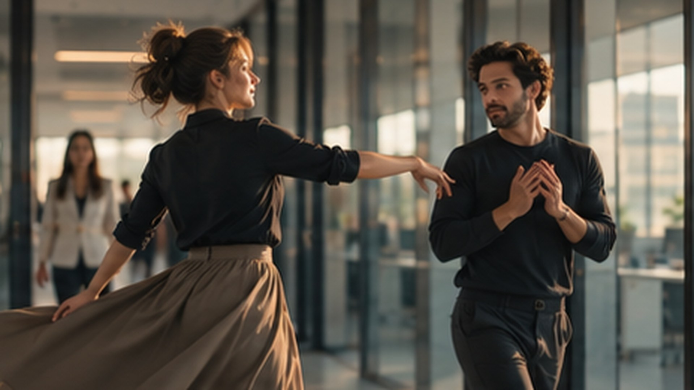
Creative
Studio
Concept route 01
One movement travels across five cities and never stops.
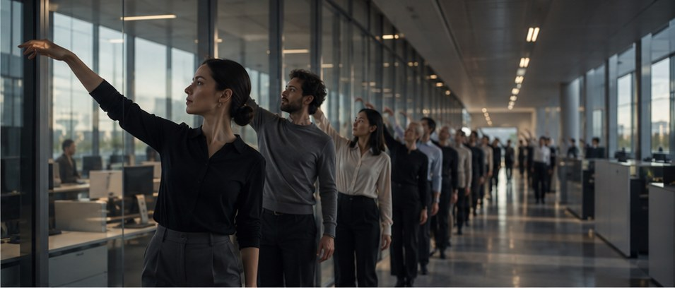
Creative
Studio
Route 1 / The relay
A single gesture begins at a desk in Munich. It is passed from colleague to colleague and from city to city, grows with every handover, and returns to where it started.
The handover cut
Every movement leaves the frame and continues in the next shot, in the next city. The film never stops moving.
Always forward
The camera always travels left to right. Five shooting days read as one continuous flow.
35 soloists, 35 nationalities
Each short scene features a different colleague, captioned with first name and country.
One group scene per city
Up to 20 people per location. All other shots use one to four people.
Creative
Studio
Route 1 / Storyboard 1 of 4
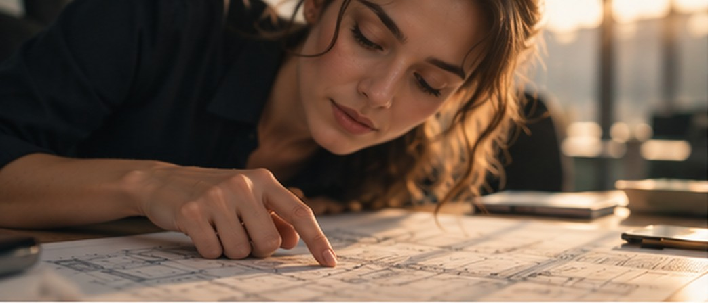
01
Munich · 0:00
The first beat
An examiner traces a line on a patent document. The first movement begins: Examine.
1 person · close-up
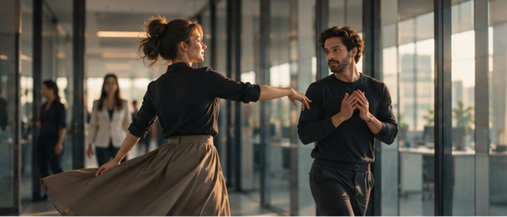
02
Munich · 0:12
The handover
She spins and hands the movement to a colleague walking by. He catches it.
2 people · Steadicam
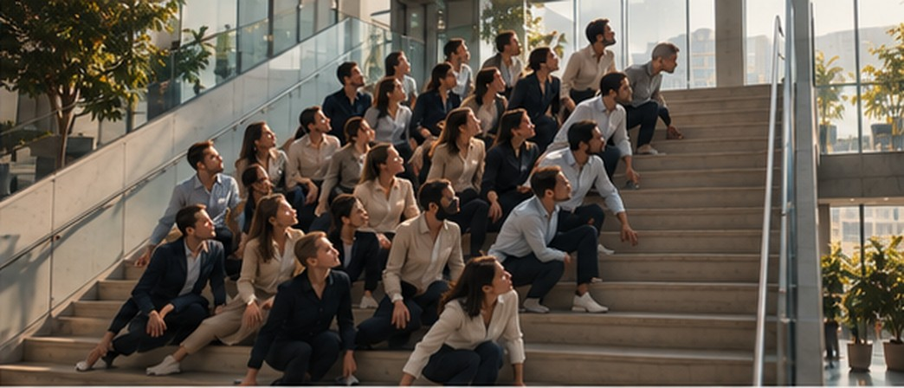
03
Munich · 0:30
The ripple
On the atrium stairs, 20 colleagues turn one after another. A ripple runs up the steps.
Group scene · 20 people
Creative
Studio
Route 1 / Storyboard 2 of 4
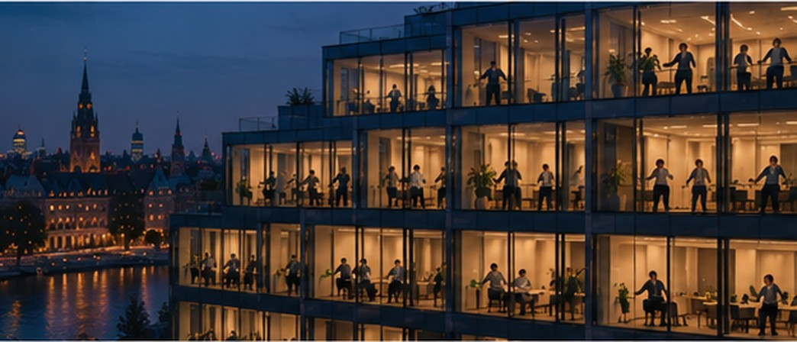
04
The Hague · 0:45
The building comes alive
Window by window, floor by floor. One or two people per window, one building in motion.
Group scene · drone
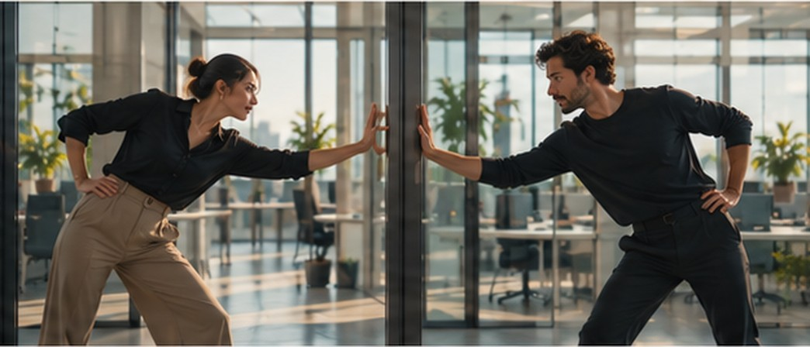
05
Berlin · 1:05
Compare
On either side of a glass wall, two colleagues move as one mirror image.
2 people · locked off
06
Berlin · 1:15
The table
From above, 20 colleagues sweep papers and hands across the table in one shared pattern.
Group scene · 20 people · top shot
Creative
Studio
Route 1 / Storyboard 3 of 4
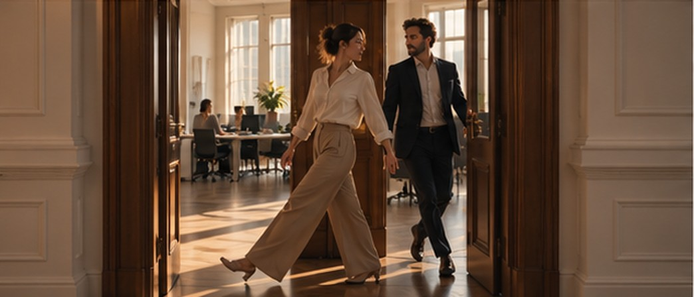
07
Vienna · 1:30
Exchange
One steps out as the next steps in. Shoulders almost touch and the movement changes hands.
2 people · Steadicam
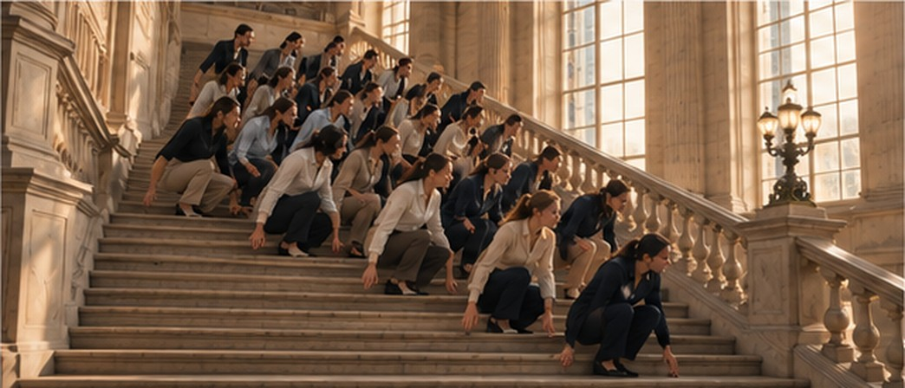
08
Vienna · 1:40
The canon
On the grand staircase the group sinks into a canon, row by row.
Group scene · 20 people
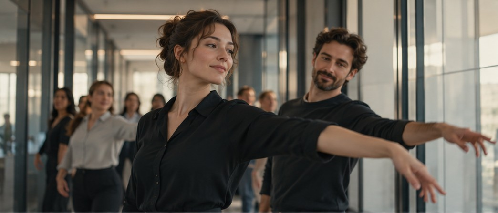
09
Brussels · 1:50
Connect
Two arms continue one line across the cut. City meets city.
2 people · match cut
Creative
Studio
Route 1 / Storyboard 4 of 4
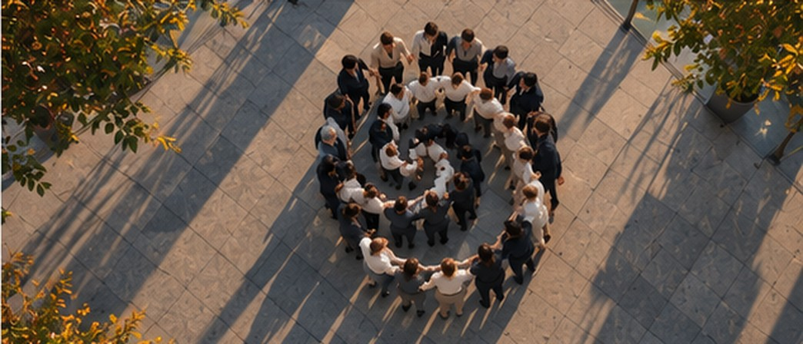
10
Brussels · 2:00
The circle
A spiral of colleagues closes into a circle, arm in arm.
Group scene · 20 people · drone
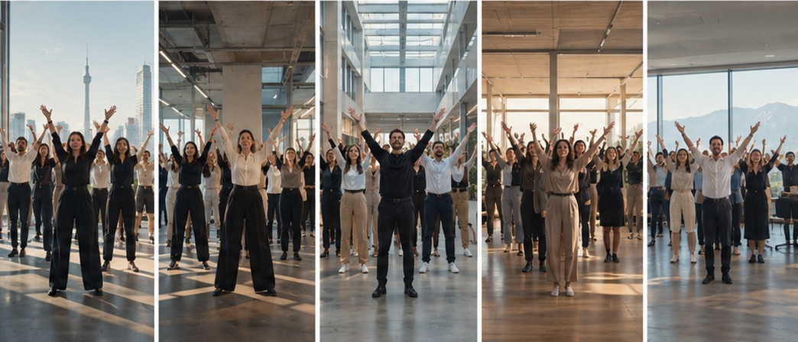
11
All five cities · 2:10
One beat
The five group scenes side by side. About 100 people, one final move, on the same beat.
Split screen · 5 locations
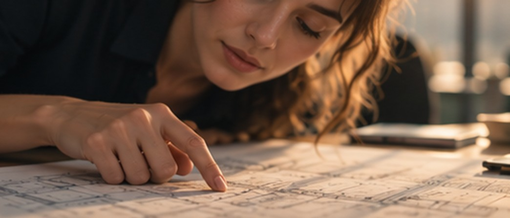
12
Munich · 2:30
Full circle
Back at the first desk. The movement returns and comes to rest. Title.
1 person · end card
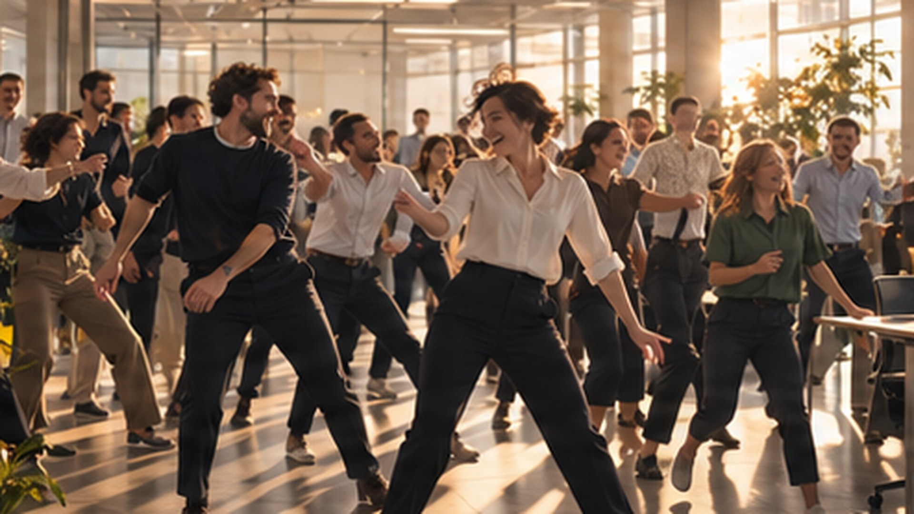
Creative
Studio
Concept route 02
It starts as a video call. It ends as a music video.
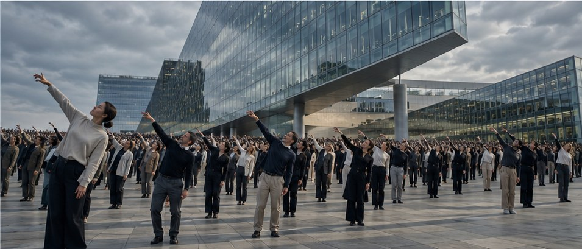
Creative
Studio
Route 2 / The rehearsal
Five colleagues meet for their Wednesday call. Only Peter in Brussels remembers that today is the choreography rehearsal for the anniversary shoot. What follows is clumsy, funny and completely contagious.
Five colleagues, five cities
Sylvia in Munich, Robert in The Hague, Ariane in Berlin, Betty in Vienna and Peter in Brussels.
From video call to music video
It starts as a split screen. The camera language slowly opens up into a cinematic, moving film.
Comedy first
An unmuted microphone, an endless typing indicator and a shoot everyone forgot.
Mistakes welcome
It is only rehearsal day. Talented or hopeless, everyone can join in.
Creative
Studio
Route 2 / Four scenes
SCENE 01
0:00 to 1:00
An ordinary morning
The Wednesday call across five cities. Peter unmutes, Happy Birthday blasts through everyone’s headphones, and the truth comes out: the rehearsal is today.
SCENE 02
1:00 to 1:30
The rehearsal
Peter turns his laptop round and demonstrates. One by one the others follow, hesitant, wrong direction, pretending to stretch. Then they find their groove.
SCENE 03
1:30 to 2:30
It’s contagious
Colleagues stop in the corridors. Sylvia pulls out her headphones and the music fills the floor. The dance spreads through all five cities until they blend into one.
SCENE 04
2:30 to 3:00
Back to reality
Out of breath, back in the call. “Same time tomorrow?” Tomorrow is the actual shoot. Ariane slowly reaches for the mute button.
Film length about 3 minutes. The final title: 50 years of moving ideas forward. Together.
Creative
Studio
Route 2 / Storyboard 1 of 3
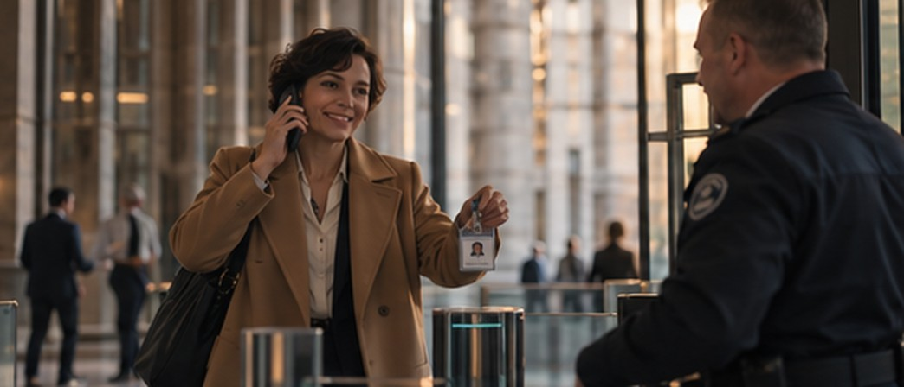
01
Vienna · 0:00
An ordinary morning
Betty arrives on the phone, badge up, a smile from security. 7:28 AM.
1 person · Steadicam
02
The Hague · 0:10
Sunrise and coffee
Robert arranges his desk. Sunrise over the city, the computer starts.
1 person
03
Five cities · 0:20
The call
Five windows on one screen. Sylvia leads, Peter can barely keep a straight face.
Split screen · 5 people
Creative
Studio
Route 2 / Storyboard 2 of 3
04
Brussels · 0:40
Today?!
Peter turns his laptop. Behind him, colleagues rehearse. Not perfectly. The others realise.
1 person + rehearsal group
05
Munich · 1:00
Just stretching
Sylvia tries a move, spots a colleague behind the glass and pretends to stretch.
1 to 2 people
06
Berlin · The Hague · 1:15
Finding the groove
Ariane gets the direction wrong, then right. Robert pushes his coffee aside and joins in.
1 person each · split screen
Creative
Studio
Route 2 / Storyboard 3 of 3
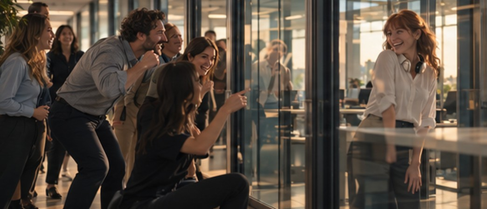
07
Munich · 1:30
It’s contagious
Colleagues stop at the glass wall. One imitates a move. Sylvia pulls out her headphones.
Group scene · up to 20 people
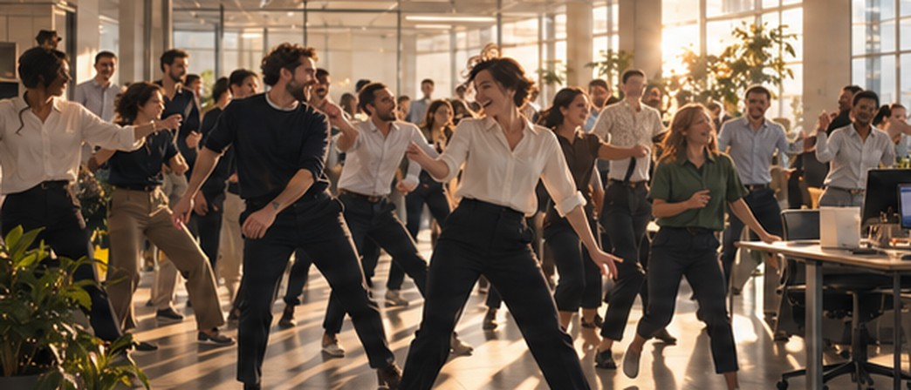
08
All five cities · 1:50
One rhythm
The camera dances through the crowds. Match cuts blend the cities into one music video.
Group scenes · 5 locations
09
Five cities · 2:30
Same time tomorrow?
Back in the call, out of breath. Tomorrow is the actual shoot. Ariane reaches for mute.
Split screen · 5 people
Creative
Studio
Costs
One production model for either route: a choreographer working with real EPO employees at all five locations.
PRODUCTION
€ 80,000
net estimate
Film
2 to 3 minutes, including intro and outro
Shooting
5 locations · 5 shooting days · 5 prep days
Team
director · camera · drone pilot · production manager · choreographer
Equipment
1 camera · 1 drone
Travel
travel and accommodation for the crew to all five locations
Post
edit · colour grading · sound mix · music licence · social cutdowns
Backup
AI, in case some shots go wrong or people don’t turn up
How we reduced the budget
Online rehearsals
instead of live rehearsals on location
Smaller crew
a lean team on every shooting day
Employees only
no professional dancers
Fewer participants
max. 20 people in the group scenes
Available light
no lighting setups
Creative
Studio
50 years of people moving ideas forward. Together.
EPO 50 · Since 1977 · A concept by Ivory Creative Studio